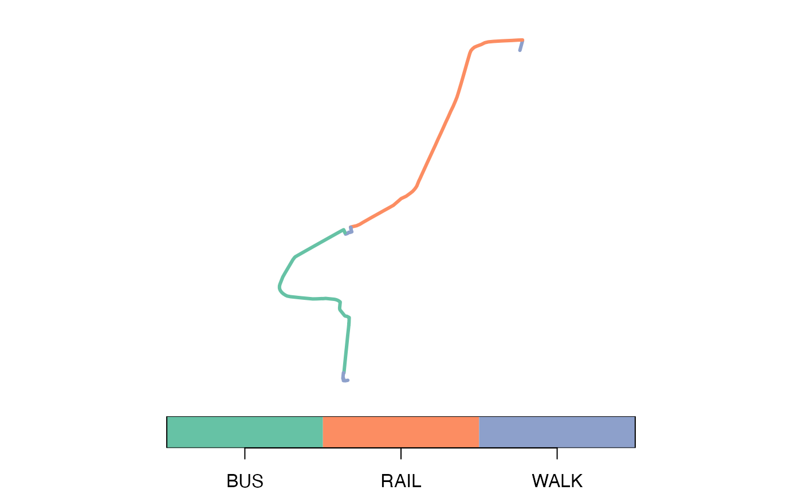

travel_time_matrix() says how long a trip takes;
detailed_itineraries() says how it is made: each leg on
foot, by bicycle, by car or on a ride, with its duration, waiting time,
distance, route and line.
Itineraries by public transport need timetables: on routes given only by frequencies (such as the São Paulo sample that ships with the package) the departures of a Monte Carlo draw are not trips that run, and public transport is refused there. This page uses the Porto Alegre sample of r5r 2.5.0 (about 2 MB, downloaded once), whose bus and train feeds have timetables.
library(peabiru)
poa <- poa_sample(c("poa_osm.pbf", "poa_eptc.zip", "poa_trensurb.zip",
"poa_points_of_interest.csv"))
poa_network <- build_network(poa, n_threads = 2)
poi <- read.csv(file.path(poa, "poa_points_of_interest.csv"))
poi[, c("id", "lon", "lat")]
#> id lon lat
#> 1 public_market -51.22781 -30.02756
#> 2 bus_central_station -51.21886 -30.02329
#> 3 gasometer_museum -51.24095 -30.03404
#> 4 santa_casa_hospital -51.22240 -30.03043
#> 5 townhall -51.22865 -30.02800
#> 6 piratini_palace -51.23068 -30.03363
#> 7 metropolitan_cathedral -51.23003 -30.03371
#> 8 farroupilha_park -51.21611 -30.03675
#> 9 moinhos_de_vento_hospital -51.20857 -30.02491
#> 10 farrapos_station -51.19762 -29.99772
#> 11 iguatemi_shopping_center -51.16241 -30.02651
#> 12 praia_de_belas_shopping_center -51.22875 -30.04995
#> 13 beira_rio_stadium -51.23659 -30.06494
#> 14 ufrgs -51.22028 -30.03340
#> 15 pucrs -51.17607 -30.05797
monday <- as.POSIXct("2019-05-13 14:00:00", tz = "America/Sao_Paulo")The fastest trip
By default (shortest_path = TRUE) each pair of origin
and destination gets the fastest trip leaving within
time_window minutes of the departure time. The origins and
destinations are paired row by row; a single origin or destination is
repeated to match the other.
from <- poi[poi$id == "farrapos_station", ]
to <- poi[poi$id == "praia_de_belas_shopping_center", ]
trip <- detailed_itineraries(
poa_network, from, to,
mode = c("WALK", "TRANSIT"),
departure_datetime = monday,
n_threads = 2
)
trip[, c("option", "departure_time", "total_duration", "segment", "mode",
"segment_duration", "wait", "distance", "route")]
#> Simple feature collection with 5 features and 9 fields
#> Geometry type: LINESTRING
#> Dimension: XY
#> Bounding box: xmin: -51.24094 ymin: -30.05002 xmax: -51.19762 ymax: -29.99729
#> Geodetic CRS: WGS 84
#> option departure_time total_duration segment mode segment_duration wait
#> 1 1 14:09:00 35.3 1 WALK 5.0 0.0
#> 2 1 14:09:00 35.3 2 RAIL 6.6 1.0
#> 3 1 14:09:00 35.3 3 WALK 4.0 0.0
#> 4 1 14:09:00 35.3 4 BUS 10.4 4.4
#> 5 1 14:09:00 35.3 5 WALK 3.9 0.0
#> distance route geometry
#> 1 174 LINESTRING (-51.1981 -29.99...
#> 2 4796 LINHA1 LINESTRING (-51.19763 -29.9...
#> 3 256 LINESTRING (-51.22827 -30.0...
#> 4 4083 188 LINESTRING (-51.22926 -30.0...
#> 5 228 LINESTRING (-51.22949 -30.0...The result is an sf data frame with one
LINESTRING per leg, in WGS 84:
plot(trip["mode"], main = NULL, key.pos = 1, lwd = 3)
Alternatives
With shortest_path = FALSE the trips are routed with the
multi-criteria router (McRAPTOR) over time_window departure
times sampled in the window, and each sequence of routes gives one
option, the fastest of its kind. suboptimal_minutes keeps
the options up to that many minutes slower than the best.
options <- detailed_itineraries(
poa_network, from, to,
mode = c("WALK", "TRANSIT"),
departure_datetime = monday,
shortest_path = FALSE,
suboptimal_minutes = 10,
drop_geometry = TRUE,
n_threads = 2
)
rides <- options[options$mode != "WALK", ]
summary_of_options <- options[options$segment == 1,
c("option", "departure_time", "total_duration")]
summary_of_options$routes <- tapply(rides$route, rides$option, paste,
collapse = " > ")[as.character(summary_of_options$option)]
summary_of_options
#> # A tibble: 17 × 4
#> option departure_time total_duration routes
#> <int> <chr> <dbl> <chr[1d]>
#> 1 1 14:00:00 120. NA
#> 2 2 14:08:16 36 LINHA1 > 188
#> 3 3 14:08:16 43.1 LINHA1 > 179
#> 4 4 14:08:16 43.6 LINHA1 > 173
#> 5 5 14:08:16 43.7 LINHA1 > 186
#> 6 6 14:08:16 45.1 LINHA1 > 165
#> 7 7 14:09:34 46.8 LINHA1 > 187
#> 8 8 14:01:30 49.9 703 > 179
#> 9 9 14:01:30 50.3 703 > 173
#> 10 10 14:01:30 50.4 703 > 186
#> 11 11 14:01:30 51.9 703 > 165
#> 12 12 14:09:34 53.8 731 > 165
#> 13 13 14:09:34 53.8 633 > 165
#> 14 14 14:09:34 53.8 715 > 165
#> 15 15 14:09:34 53.8 R62 > 165
#> 16 16 14:09:34 55.5 LINHA1 > 274
#> 17 17 14:09:34 50.5 LINHA1 > 274 > T7The first option walks all the way; the others ride the train and a bus, or two buses.
With a fare_structure each option also gets its fare
(total_fare) and the fare paid by the end of each leg
(cumulative_fare); see the article on fares.
Street edges and stops
osm_link_ids = TRUE adds, for each street leg, the
‘OpenStreetMap’ way ids and the indices of the street network’s edges it
goes along (the edge_index of
street_network_to_sf()), and for each ride the stops where
it boards and alights:
ids <- detailed_itineraries(
poa_network, from, to,
mode = c("WALK", "TRANSIT"),
departure_datetime = monday,
osm_link_ids = TRUE,
n_threads = 2
)
ids$osm_id_list <- substr(ids$osm_id_list, 1, 30)
sf::st_drop_geometry(ids)[, c("segment", "mode", "osm_id_list",
"board_stop_id", "alight_stop_id")]
#> # A tibble: 5 × 5
#> segment mode osm_id_list board_stop_id alight_stop_id
#> <int> <chr> <chr> <chr> <chr>
#> 1 1 WALK [161220162] "" ""
#> 2 2 RAIL [] "poa_trensurb:FR" "poa_trensurb:…
#> 3 3 WALK [368222624, 367495947, 1291770 "" ""
#> 4 4 BUS [] "poa_eptc:1643" "poa_eptc:1535"
#> 5 5 WALK [112414431, 233476414, 3265385 "" ""Every origin to every destination
all_to_all = TRUE routes from each origin to each
destination instead of row by row. drop_geometry = TRUE
leaves the lines out and returns a table without geometry, and
output_dir writes one CSV file per pair instead of
returning the result.
places <- poi[1:3, ]
all <- detailed_itineraries(
poa_network, places, places,
mode = "WALK",
all_to_all = TRUE,
drop_geometry = TRUE,
n_threads = 2
)
unique(all[, c("from_id", "to_id", "total_duration", "total_distance")])
#> # A tibble: 9 × 4
#> from_id to_id total_duration total_distance
#> <chr> <chr> <dbl> <int>
#> 1 public_market public_market 0.3 88
#> 2 public_market bus_central_station 21 1287
#> 3 public_market gasometer_museum 26 1583
#> 4 bus_central_station public_market 21.1 1273
#> 5 bus_central_station bus_central_station 0.1 28
#> 6 bus_central_station gasometer_museum 46.7 2760
#> 7 gasometer_museum public_market 26.3 1580
#> 8 gasometer_museum bus_central_station 46.8 2772
#> 9 gasometer_museum gasometer_museum 0.3 5Trip options
To see every trip worth considering between two points, faster or
cheaper, with fewer transfers or less walking, and not only the fastest
one, see trip_options(), peabiru’s own multi-criteria
planner: Trip options.